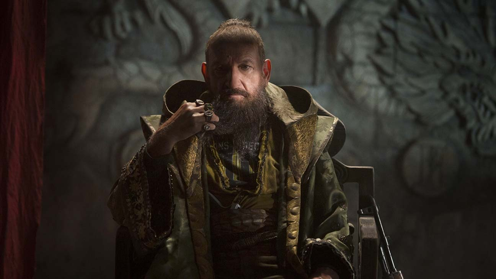

The Mandarin is one of the main antagonists of Marvel Comics, most commonly serving as the main antagonist of the Iron Man comic book series and a major antagonist in the Avengers comics. He is a mystic and scientific genius that seeks to rule the world.
The Mandarin possesses the ability to channel chi into superhuman physical abilities such as going without food or water for years at a time, superhuman strength, and superhumanly powerful martial arts strikes.
